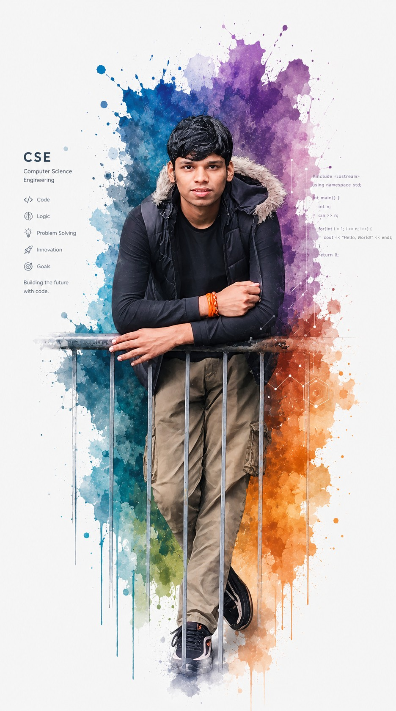
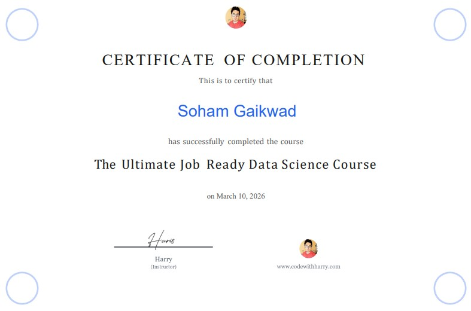
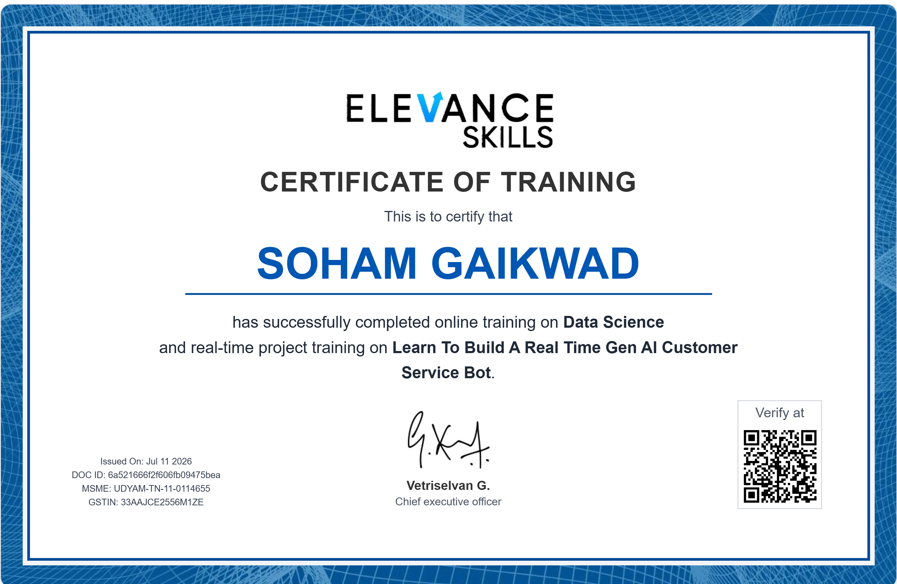
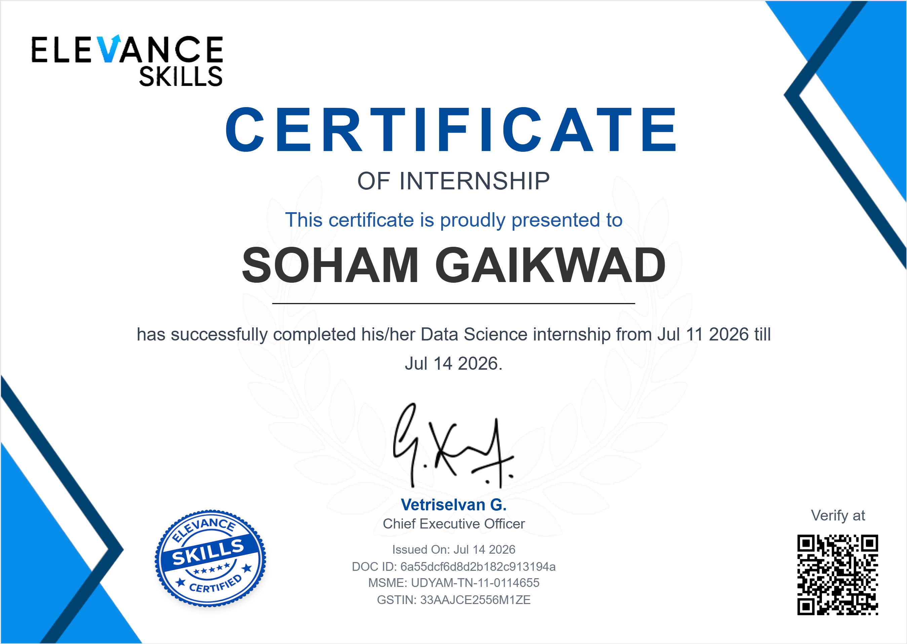
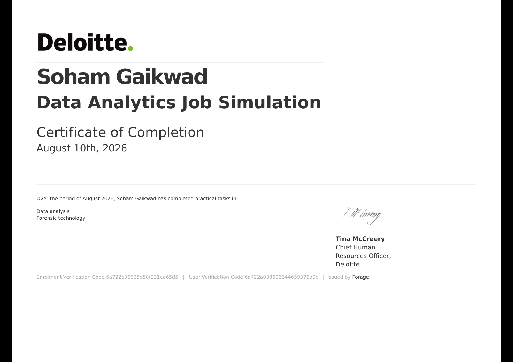
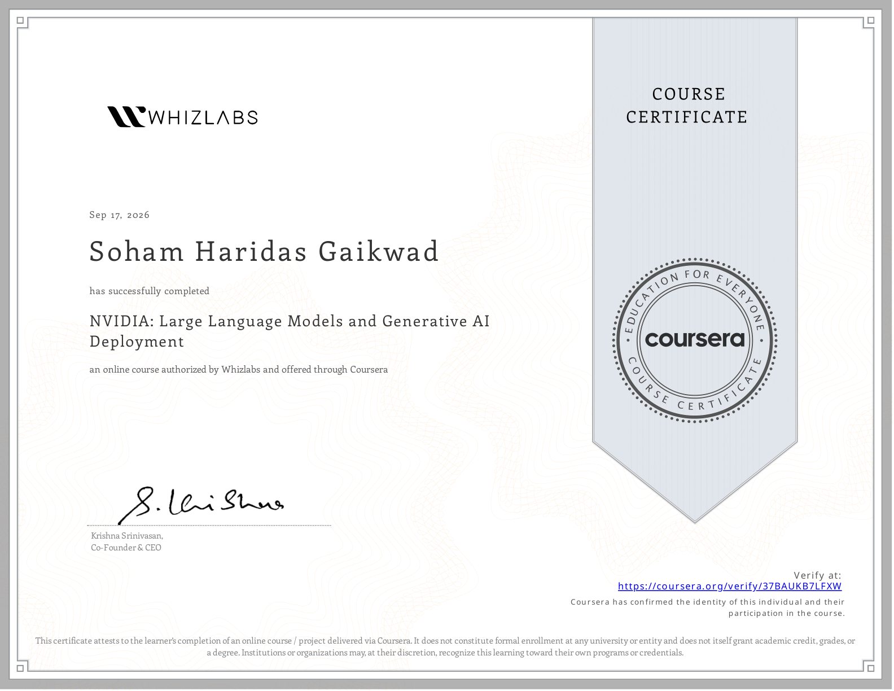
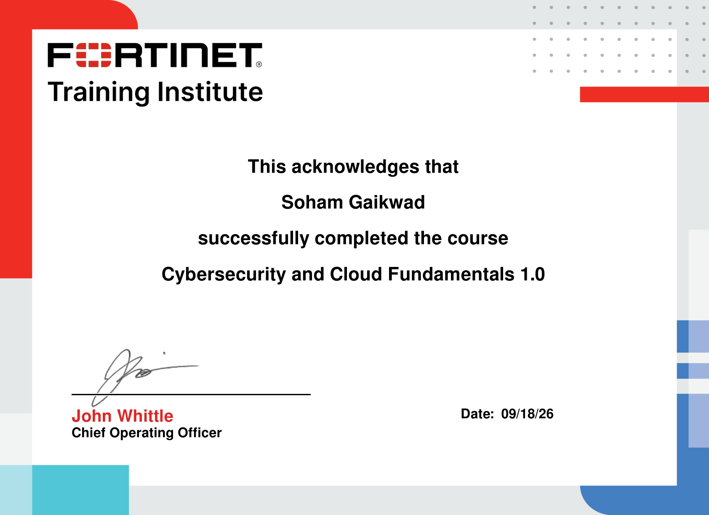

Soham Haridas Gaikwad
Computer Science Engineering student at Sardar Patel Institute of Technology & AI/ML Engineer driven by architecting end-to-end intelligent systems. From real-time multimodal lecture perception agents and edge-vision collision risk engines to air-gapped forensic graph anomaly detection and double-entry carbon ledgers, I design, optimize, and deploy software that solves complex, mission-critical challenges with mathematical rigor and production-grade engineering.
About Me
Architecting autonomous, intelligent systems from first principles.
I am a Computer Science Engineering student at Sardar Patel Institute of Technology (SPIT), Mumbai, engineering at the intersection of Artificial Intelligence, Machine Learning, and scalable systems architecture. Rather than building cookie-cutter wrappers, I focus on full-lifecycle innovation: designing custom multimodal perception pipelines, fine-tuning and deploying LLMs with ONNX/PEFT, building real-time edge computer vision inference engines, and implementing court-admissible forensic graph topologies. With a deep foundation in core computer science—algorithms, systems design, and distributed telemetry—I turn emerging research into robust, production-ready software that delivers measurable impact.
Mission
Engineer high-impact, autonomous AI architectures and production-grade systems that tackle high-stakes problems across vision, intelligence, and distributed computing.
Vision
Pioneer next-generation intelligent infrastructure as a world-class AI/ML Systems Engineer, setting benchmarks in reliability, explainability, and speed.

Work Experience
Academic & Academic Leadership Experience
Computer Science Engineering Student
Engaging deeply in core computer engineering curriculum while building independent projects and exploring emerging technologies.
- Studying core computer science subjects including Operating Systems (OS), Database Management Systems (DBMS), Computer Networks (CCN), Design and Analysis of Algorithms (DAA), and Computer Organisation & Architecture (COA).
- Developing software projects using programming languages (Python, JavaScript, C) and data science concepts.
- Building practical applications beyond academic coursework to solve local and analytical problems.
- Exploring DevOps workflows, Git practices, AI concepts, and modern scalable system architectures.
Education
Academic Degrees
B.Tech in Computer Science & Engineering
Currently pursuing a Bachelor of Technology in Computer Science & Engineering, maintaining a competitive track record and focusing heavily on analytics, algorithms, and computing systems.
- Current CGPA: 8.09 / 10.0
- Key Coursework: Design & Analysis of Algorithms (DAA), Operating Systems (OS), Computer Communication Networks (CCN), Database Management Systems (DBMS), Computer Organisation & Architecture (COA), Data Science.
- Developed solid understanding of data structures, complexity analysis, networking protocols, database normalization, and multi-threaded processing.
Projects
Main Interactive Web Portfolio
My primary portfolio showcasing custom interactions, responsive visual styling, and comprehensive timelines. Created to demonstrate clean front-end coding and modern deployment practices.
- Designed interactive pages featuring custom typing animations and dynamic card hover spotlight glows.
- Integrated asynchronous contact form workflows and automated status notifications.
- Optimized with clean responsive design and automated CI/CD static hosting workflows.
LearnLens AI – Multimodal Live Lecture Ingestion & Autonomous AI Teacher
A production-quality, local-first multimodal learning agent that observes live video streams (YouTube, Coursera, Fortinet, Zoom) via Chrome display capture, transcribes lecture speech in real time, deduplicates slides using visual perceptual hashing, and provides an active 12-mode AI tutor grounded in session-scoped RAG.
- Engineered real-time audio/video ingestion utilizing
faster-whisperfor synchronized transcription and Tesseract OCR for text extraction. - Implemented perceptual difference hashing (
dHash) with Hamming distance filtering to eliminate 85%+ redundant frames and capture clean visual state changes. - Architected session-scoped RAG vector namespaces preventing cross-domain hallucinations with timestamp-grounded slide citation cards.
- Synthesizes full-bleed 16:9 widescreen presentation decks (
python-pptx) and comprehensive study guides (ReportLab) on demand.
ROAD-SHIELD – AI Vehicle Tracking, Speed Estimation & Incident Evidence System
An intelligent edge computer vision safety and accident forensics system that transforms passive dashcam feeds into an active perception sensor: tracking multi-vehicle kinematics, estimating closing speed, computing dynamic collision risk, and securing tamper-evident forensic evidence vaults.
- Integrated YOLO11 and ByteTrack / Centroid-IoU for persistent real-time multi-vehicle detection and tracking across dynamic road scenes.
- Built an Automated License Plate Recognition (ALPR) system featuring a Temporal Voting Engine to resolve character flickering across consecutive frames.
- Formulated Time-To-Collision (TTC) risk matrix combining relative closing rate (\(\Delta d / \Delta t\)), host ego-speed, and lane position to prevent false alarms.
- Engineered an in-memory circular rolling buffer that auto-seals tamper-evident evidence packages with telemetry logs, timeline CSVs, and SHA-256 cryptographic verification.
BIT-SHIELD – Sovereign Offline Bitcoin Transaction Forensics & Anomaly Detection
An enterprise, air-gapped forensic workstation designed for sovereign cryptocurrency investigation, graph topology reconstruction, and explainable anti-money laundering (AML) anomaly detection without cloud dependencies or telemetry leaks.
- Architected offline universal ingestion with fuzzy schema mapping and SHA-256 fingerprinting for legal evidence admissibility (ISO/IEC 27037).
- Reconstructed transaction flows into bounded bipartite evidence graphs (
Address ↔ Transaction) via NetworkX with dynamic k-hop memory budgeting. - Programmatically identifies 8 money-laundering motifs (Rapid-Hop, CoinJoin mixing, Peel Chains, Fan-Out dispersion, and Dormant reactivation).
- Blends 8 deterministic forensic rules with an unsupervised Isolation Forest model and interactive Cytoscape.js visual graph canvas.
Green Finance – Carbon Footprint & Double-Entry Credit Ledger Platform
A scalable, production-oriented green fintech platform engineered for logging organizational carbon footprints across Scope 1–3 emissions, managing carbon credit lifecycles via atomic double-entry ledgers, and monitoring infrastructure energy draw in real time.
- Engineered an audit-ready double-entry bookkeeping ledger posting atomic debits and credits with row-level database locking and Redis cache invalidation.
- Built Scope 1 (Direct Fuel), Scope 2 (Electricity/Energy), and Scope 3 (Supply Chain) footprint calculation pipelines with Pydantic validations.
- Integrated Kepler infrastructure telemetry to scrape real-time CPU and server power draw via Prometheus and convert Watt-hours to carbon weight.
- Designed modular architecture with FastAPI routers, SQLAlchemy ORM models, JWT authentication, and Grafana monitoring dashboards.
RAG-Based AI Teaching Assistant
An intelligent tutoring assistant powered by Retrieval-Augmented Generation (RAG) to provide contextual, source-backed answers for course materials.
- Engineered semantic search pipelines using LangChain, LlamaIndex, and vector databases.
- Implemented document processing workflows for textbooks, notes, and lecture transcripts.
- Built an interactive Streamlit UI with conversation memory and source citation overlays.
HyperLocal Demand Forecaster V2
High-accuracy machine learning demand forecasting engine optimized for localized predictions, incorporating temporal dynamics and weather trends.
- Built a blended ensemble forecasting approach combining LightGBM, XGBoost, and CatBoost models.
- Integrated Optuna framework for hyperparameter tuning and search space optimization.
- Embedded SHAP value calculators for visual model explainability and localized feature impacts.
FIFA World Cup Regression Analysis
Rigorous statistical modeling and exploratory data analysis of historic FIFA World Cup statistics to predict team goal rates and outcomes.
- Performed extensive exploratory data analysis (EDA) and coefficient interpretation of linear models.
- Conducted Variance Inflation Factor (VIF) collinearity checks to isolate independent predictors.
- Built a fully reproducible Jupyter notebook detailing feature scaling and model validations.
Internship Experience
Real-Time Gen AI Project Intern
Mentor-Guided Real-Time Project Internship — "Learn To Build A Real Time Gen AI Customer Service Bot"
Completed a hands-on internship building a production-style, retrieval-augmented AI chatbot using Google Gemini, LangChain, and FAISS. Started from a base customer service FAQ bot and extended it into 6 distinct AI systems, each solving a real, self-contained problem — from emotion-aware responses to multilingual, multimodal reasoning. The internship emphasized building on a shared architecture rather than starting fresh each time, mirroring how real product teams incrementally ship features on an existing codebase.
Key Takeaways & Reflections
- Grounded Retrieval: Designed retrieval pipelines that stay anchored in verified source data instead of hallucinating — learning when it is appropriate for the system to reply with "I don't know."
- Quota & Rate Limits: Navigated real-world constraints of free-tier LLM APIs, building robust error-handling, backoff, and retry logic rather than simply retrying calls.
- Intent vs. Literal Match: Experienced the difference between detecting intent/context and literal string matching while resolving conversational follow-up queries.
- Dependency Management: Managed complex Python version conflicts (LangChain pins, Streamlit upgrades) in an incrementally evolving project without breaking existing modules.
- Precise Prompt Engineering: Crafted detailed instructions to reliably control LLM behavior (e.g. enforcing multilingual formats and prevention of hallucination) instead of expecting default compliance.
One Foundation, Six AI Systems Built
Features added incrementally on a shared retrieval-augmented chatbot architecture
Sentiment-Aware Chatbot
Integrated real-time sentiment analysis to detect customer emotion and dynamically adapt response tone.
- Integrated VADER sentiment analysis to classify queries as positive, negative, or neutral in real time.
- Engineered dynamic system prompts that adjust tone (e.g., leading with empathy for frustrated users).
Medical Q&A (MedQuAD)
Domain-expert medical chatbot parsing 16k+ Q&A pairs with structured entity recognition and high grounding.
- Built a custom XML parser to process 16,000+ medical questions and answers from NIH MedQuAD sources.
- Powered retrieval via FAISS vector databases using Gemini embedding models for high precision.
Dynamic Knowledge Base
Incremental indexing mechanism to update vector databases in real time without costly full re-indexes.
- Designed and implemented a system to append new document embeddings into the vector store dynamically.
- Avoided full re-indexing of data, minimizing computational overhead and API costs.
arXiv Research Assistant
Domain chatbot reasoning over live computer science research papers with conversational memory.
- Integrated live arXiv REST API to search, extract metadata, and summarize computer science papers on the fly.
- Engineered a query-rewriting step using LLMs to resolve follow-up questions within the chat context.
Multimodal Assistant
Assistant that reasons over images and text together with persistent, multi-turn chat history.
- Leveraged Gemini's native multimodal capabilities to analyze images alongside text prompts.
- Maintained persistent conversational memory over multiple turns of image-based discussions.
Multilingual Chatbot
Automatic language detection and cross-lingual responses across English, Hindi, Marathi, and Spanish.
- Integrated `langdetect` to identify user query languages instantly without manual selection.
- Supported smooth conversation history retention across mid-session language shifts.
Skills & Proficiencies
ML & Data Science
Generative AI & NLP
Computer Science Core
Languages & Web Tools
DevOps & Workflows
Certifications
Data Science with Python
- Mastered end-to-end data science workflows from data loading to evaluation.
- Hands-on experience in exploratory data analysis (EDA) and regression/classification model building.
- Practical operations using NumPy arrays, Pandas dataframes, and Matplotlib/Seaborn visualization.
- Gained foundational understanding of neural networks, neural network weights, and LLM structures.

Real-Time Gen AI Project Training
- Mastered building retrieval-augmented generation (RAG) pipelines and conversational agents.
- Practical training on LLMs (Google Gemini API), LangChain, and FAISS vector embeddings.
- Implemented advanced prompt engineering, query rewriting, and context retention techniques.
- Verified by: ElevanceSkills Verification

Real-Time Gen AI Project Internship
- Developed and shipped a production-style, 6-feature RAG chatbot from a base customer service bot.
- Implemented real-time sentiment analysis (VADER), medical Q&A parser (MedQuAD), and multimodal reasoning.
- Designed dynamic incremental index updates and cross-lingual support (English/Hindi/Marathi/Spanish).
- Verified by: ElevanceSkills Verification

Deloitte Australia - Data Analytics Job Simulation
- Factory Telemetry Analysis: Analyzed operational machine telemetry data and constructed an interactive Tableau dashboard showcasing downtime insights.
- Compensation & Equality Analysis: Analyzed salary and equality scores using Excel, classifying them using conditional threshold values.
- Gained hands-on experience in data analysis, dashboard creation, spreadsheet logic, data modeling, and forensic technology.
- Credential ID:
6a722c36635b58f231ea6585 - Verified by: Forage Verification

NVIDIA: Large Language Models (LLMs) and Generative AI Deployment
- End-to-End LLM Lifecycle: Covered training data preparation, fine-tuning, evaluation, optimization, deployment, and production monitoring.
- Training, Tuning & Alignment: Mastered Zero-Shot and Few-Shot Learning, Instruction Tuning, Prompt Tuning, PEFT, and RLHF.
- Optimization & Deployment: Model performance evaluation with Perplexity, deep learning model conversion with ONNX, and NVIDIA ecosystem deployment strategies.
- Credential ID:
37BAUKB7LFXW - Verified by: Coursera Verification

Cybersecurity and Cloud Fundamentals 1.0
- Cloud & Network Security: Mastered fundamental cloud defense strategies, shared responsibility models, and multi-tenant threat vectors.
- Zero Trust & Perimeter Architecture: Explored Next-Generation Firewalls (NGFW), Zero-Trust Network Access (ZTNA), and secure web gateways.
- Threat Intelligence & Compliance: Practical study of intrusion vectors, automated security fabrics, and cyber incident forensics.
- Credential ID:
0773903318SG - Verified by: Fortinet Training Institute (Signed by John Whittle, Chief Operating Officer)

Achievements & Stats
"Academic excellence, technical growth, and continuous project building."
Strong Academic Foundation in CSE
Successfully maintained a high Cumulative Grade Point Average (CGPA) of 8.09 within the rigorous Computer Science B.Tech curriculum. Coordinated academic goals with real-world software practices, exploring advanced database concepts, network routing protocols, and predictive modeling frameworks in the student ecosystem.
SPIT CSE
8.09 CGPA Record
Let's Build Something Together
Have an exciting project or opportunity?
I'm always open to discussing new software development initiatives, machine learning analytics challenges, or developer contributions. Feel free to contact me directly using my phone, email, or by filling out this form!